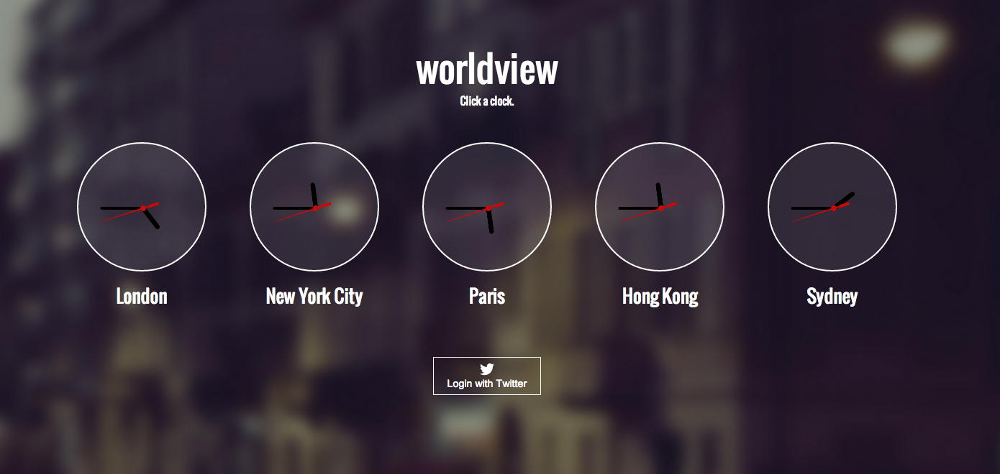
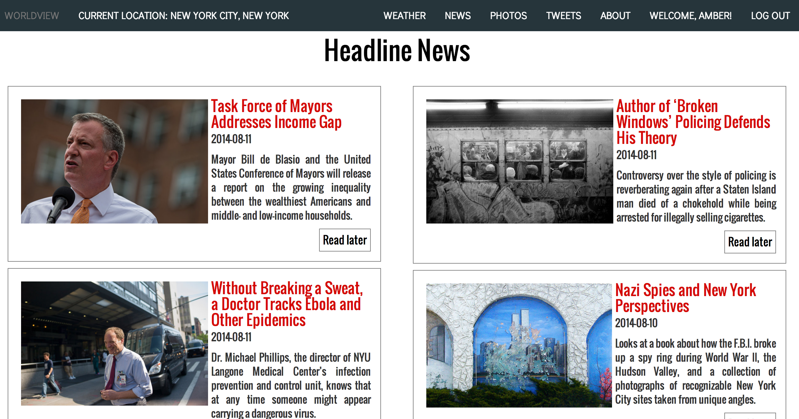
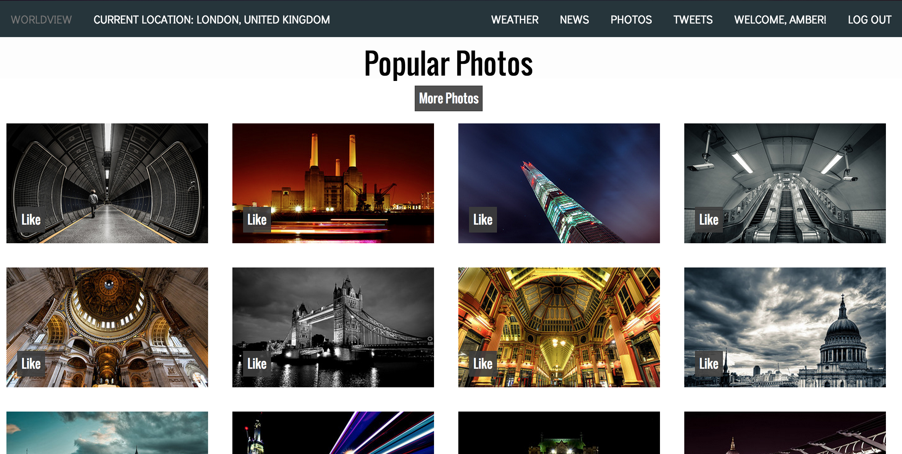
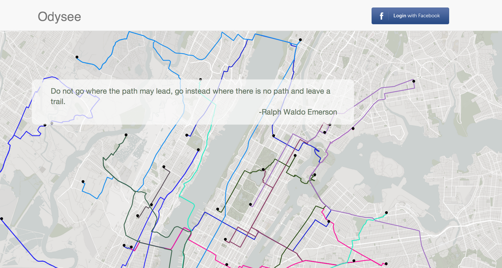
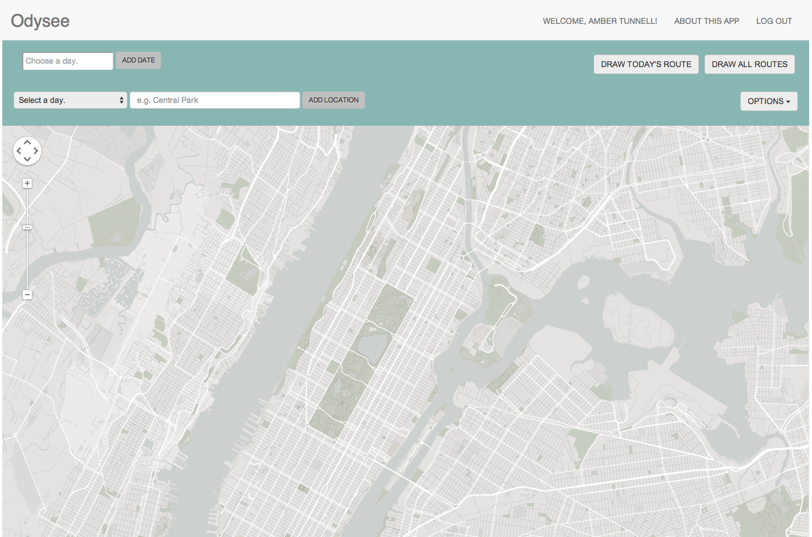

projects
-
world-view.today
Web application utilizing Forecast.io, Twitter, Weather Underground, New York Times, and Flickr APIs to provide curated content from thousands of searchable cities around the world.
   -
odysee.voyage
Web application that creates maps of a user’s daily travels.
 